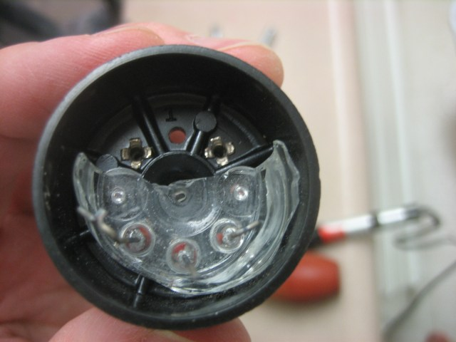
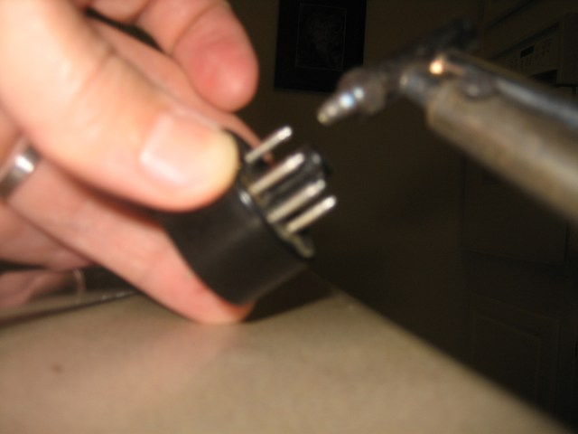
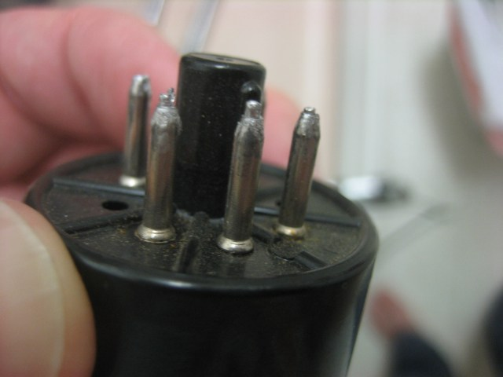
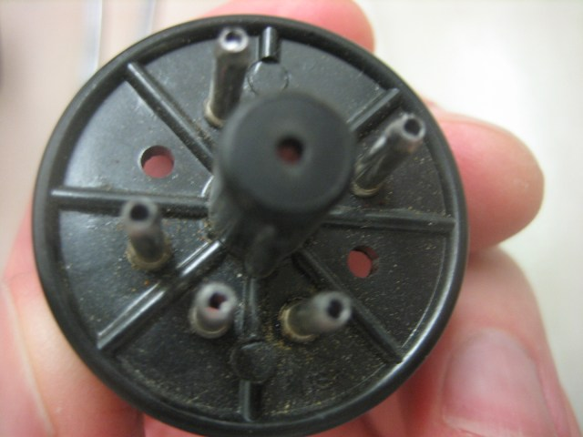
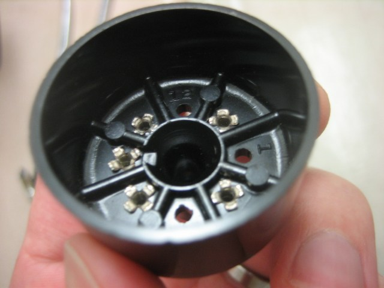

Salvaging octal tube socket bases
One of the tube amp projects I have in mind lately is to create some kind of instrumentation dashboard for a guitar amplifier. In order to do this I need to create some tube socket adapters that go between the amp and the tubes so that I can measure things like plate voltages and bias currents.
Some companies sell little adapters but they are kind of expensive. You can buy tube sockets pretty easily, but the tube bases are harder to come by. The Tube Store sells them for 2USD each though, which isn’t too bad.
Anyway, I have heard of some people breaking old tubes to reclaim the plastic or phenolic bases, so I figured I’d give that a shot too. One of the Audiohackers guys (hi Fred) mentioned the other day that the wires coming out of the glass envelope were just potted in the hollow pins of the tube bases with solder and you should be able to desolder them.
I managed to do just that, and it wasn’t all that bad. I’m not going to be doing this for tubes that I can buy bases for probably, but it’s good to know that it works in a pinch or for more esoteric base types that might be harder to find new.
I started by breaking the tube off at the base, which turned out to be a bad idea I think. If I do this again I’m going to try to leave the tube intact. The upside of breaking the tube is that you might be able to yank on the individual pins with a pair of pliers during the extraction process, but the downside is sharp broken glass sticking out of the base while you are working on it.

The basic process that I used was to hold a desoldering iron on the end of the pin for a while and start sucking out the solder once it’s good and hot. The first few hits with the desoldering iron won’t seem like they are doing much, but you’ll know you’re getting somewhere once it starts getting faster for the suction of the iron to release. When you get an airy slurping sound you know you’re there.

Once you’ve gotten the solder sucked out of all of the pins, hit each one with the tip of the iron and wiggle the wire back and forth a little to get it free of any remaining solder. You’ll probably feel the inner wire give a little when first hit with the tip of the iron. This is what you want, don’t let the solder reflow too much or you’ll end up re-sticking it to the base.

Since the wires stick out a bit beyond the hollow pins of the base, it’s easy to start pushing them down and out of the base a little bit at a time, going around the base and wiggling the rest of the tube from the base.
Once the lead wires are free of the base you can see down through the hollow pins:

Here is the base, completely clear of the old glass and wire:
